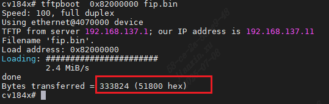
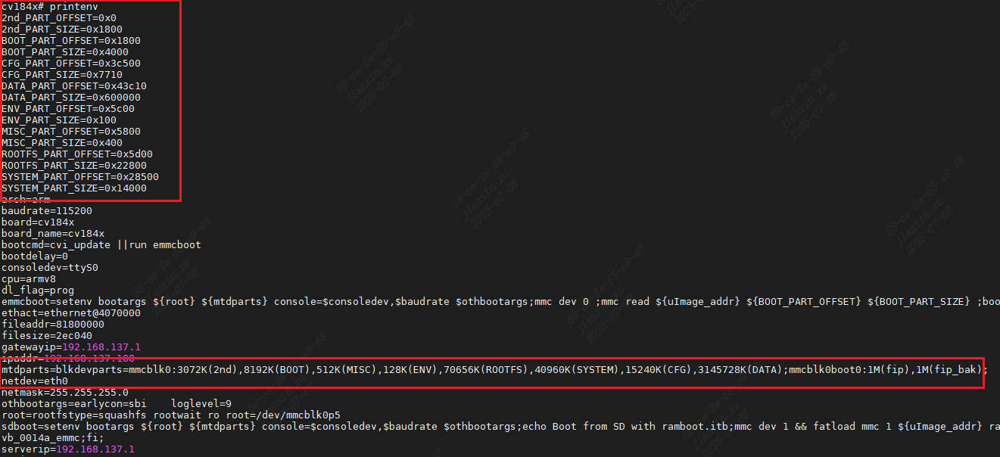

5.2. 烧写固件到Flash¶
5.2.1. 烧写前准备¶
查看加载进来的固件的大小
在使用TFTP加载固件到DDR时，可以从打印中看到文件的大小
{kind=link}

查看每个固件在Flash中的偏移地址
使用U-BOOT的printenv命令可以查看这部分信息，或者打开SDK/u-boot-2021.10/include/cvipart.h，此文件内也包含了这部分信息
{kind=link}


5.2.2. 烧写固件¶
从上述内存地址把固件加载到emmc指定块位置
写文件进emmc 时需要注意，文件大小的单位为“块”，即实际大小/块大小512，请对齐后再进行emmc 操作
1 # 1. 清空ddr对应区域，并加载文件到ddr
2 # 2. 写fip.bin到emmc boot0分区,
3 # fip.bin 在boot分区，其他文件在user分区；选择 emmc 并切换到 boot 分区
4 mmc dev 0 1
5 # 写fip.bin进flash，参数为DDR地址，flash地址，文件大小
6 mmc write 0x82000000 0x0 0x800
7 # 对fip.bin进行双备份
8 mmc write 0x82000000 0x800 0x800
9 # 3. 写其他文件到emmc boot0分区
10 # 选择 emmc 并切换到 user 分区
11 mmc dev 0 0
12 # 写yoc.bin
13 mmc write 0x82100000 0x0 0xc00
14 # 写boot.emmc
15 mmc write 0x82280000 0x1800 0x1800
16 # 写rootfs.emmc
17 mmc write 0x82580000 0x5d00 0x4000
18 # 写cfg.emmc
19 mmc write 0x82d80000 0x3c500 0x5000
20 # 写system.emmc
21 mmc write 0x83780000 0x28500 0x2800
从上述内存地址把固件加载到spinand指定位置
1 # 使用mtd 命令也可以查看当前spinand 分区情况
2 mtd

1 # 擦除fip.bin
2 nand erase.part fip
3 # 写fip 要使用cvi_sd_update 其他的使用nand write
4 # cvi_sd_update 可以对fip.bin 做双备份
5 cvi_sd_update 0x82000000 spinand fip
6
7 # 擦除yoc.bin
8 nand erase.part 2nd
9 # 写yoc.bin offset和size要按照 page size 对齐，单位为字节
10 nand write 0x82100000 2nd 0x180000
11 # 擦除boot.spinand
12 nand erase.part BOOT
13 # 写boot.spinand
14 nand write 0x82280000 BOOT 0x300000
15 # 擦除rootfs.pinand
16 nand erase.part ROOTFS
17 # 写rootfs.spinand
18 nand write 0x82580000 ROOTFS 0x800000
19 # 擦除cfg.spinand
20 nand erase.part CFG
21 # 写cfg.spinand
22 nand write 0x82d80000 CFG 0xA00000
23 # 擦除system.spinand
24 nand erase.part SYSTEM
25 # 写system.spinand
26 nand write 0x83780000 SYSTEM 0x300000
从上述内存地址把固件加载到spinor指定位置
1 # 探测并初始化 SPI-NOR
2 sf probe
3 # 擦除flash，不然无法写入，以16MB容量为例，0x0是起始地址，16M = 0x1000000
4 sf erase 0x0 0x1000000
5 # 根据printenv命令得到的信息将DDR的数据写入Flash，按page 对齐。单位为字节。
6 # 写fip.bin
7 sf write 0x82000000 0x0 0x100000
8 # 写yoc.bin
9 sf write 0x82100000 0x200000 0x100000
10 # 写boot.spinor
11 sf write 0x82280000 0x300000 0x300000
12 # 写rootfs.spinor
13 sf write 0x82580000 0x640000 0x480000